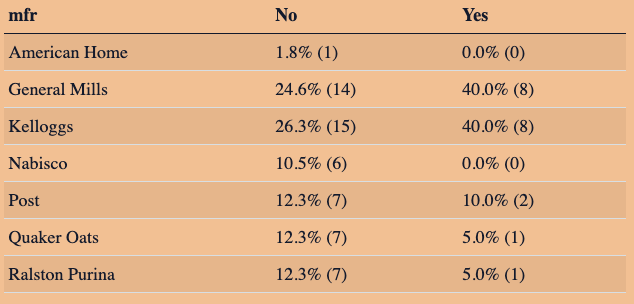

This week the Ready4R mailing list focus on crosstables, also known as two-way tables.

A crosstable of manufacturers cereals with mascots.
Introduction
Ready4R is a mailing list offering a free online course initiated by local Oregonian Ted Laderas to impart foundational knowledge in rstats and the tidyverse. Subscribers receive a weekly email delving into various methods for data exploration and analysis. On a weekly basis, I will look into these examples, providing additional insights based on my own experiences.
Crosstables
Crosstables are a helpful way to compare the results of two or more variables in a table, so that we can start asking questions about how they relate. We start this week using the same cereals dataset, but slightly modifying it.
Show code
# Install Package# Load Packageslibrary(readr)library(dplyr)library(janitor)# Load Datacereals <- readr::read_csv("../../../../data/cereal.csv") |># clean names by converting to lowercase, replace spaces # with underscore and removes special characters janitor::clean_names() |># make shelf an ordered factor dplyr::mutate(shelf =factor(shelf, ordered =TRUE)) |># convert mfr and type columns to categorical data dplyr::mutate(across(c("mfr", "type"), as.factor))# Rename Labelsmanu_labels <-c("American Home"="A","General Mills"="G","Kelloggs"="K","Nabisco"="N","Post"="P","Quaker Oats"="Q", "Ralston Purina"="R")cereals <- cereals |> dplyr::mutate(mfr = forcats::fct_recode(mfr, !!!manu_labels))
Crosstabs with janitor::tabyl()
For a single variable we can use janitor::tabyl() to view counts and percentages, as shown below:
A slick way to get counts and percentage per shelf (AKA our ordered factor variable). Next we may want to know whether the manufacturers (factor variable) are evenly distributed in terms of cereal type (factor variable). Note: Use adorn_percentages() and adorn_n() interchangeably to get percentages or counts.
Show code
cereals |># Create frequency table of manufacturers by type janitor::tabyl(mfr, type) |># Calculate percentages based on hot and cold cereal totals janitor::adorn_percentages(denominator ="row") |># Format percentages janitor::adorn_pct_formatting() |># Add totals janitor::adorn_ns() |># Nicely format table knitr::kable()
mfr
C
H
American Home
0.0% (0)
100.0% (1)
General Mills
100.0% (22)
0.0% (0)
Kelloggs
100.0% (23)
0.0% (0)
Nabisco
83.3% (5)
16.7% (1)
Post
100.0% (9)
0.0% (0)
Quaker Oats
87.5% (7)
12.5% (1)
Ralston Purina
100.0% (8)
0.0% (0)
\(\underline{\textbf{Insights}}\)
Only 1 manufacturer makes hots cereals: American Home
Only 2 manufacturers make both hot and cold cereal: Nabisco and Quaker Oats
The remaining 4 manufacturers only make cold cereals: General Mills, Kelloggs, Post, and Raiston Purina
Shelf Height and Marketing
Now let’s look at the distribution of cereals across different shelf heights (1 = bottom, 2 = middle, and 3 = top). According to an article cited by Ted titled Cereal aisle psychology: All eyes on the consumer, researchers conducted a two-part study confirming that cereals targeting children are typically placed about 23 inches off the ground. They observed that cereals on the top shelves often feature characters staring straight ahead or slightly upward to make eye contact with adults, while those on lower shelves, adorned with cartoon characters with large inviting eyes, create eye contact with children.
Lets use crosstables to visualize how manufacturers distribute their cereals across shelves.
Show code
cereals |># Create frequency table of manufacturers by shelf janitor::tabyl(mfr, shelf) |># Calculate percentages based on shelf total janitor::adorn_percentages(denominator="row") |># Format percentages janitor::adorn_pct_formatting() |># Add totals janitor::adorn_ns() |># Nicely format table knitr::kable()
mfr
1
2
3
American Home
0.0% (0)
100.0% (1)
0.0% (0)
General Mills
27.3% (6)
31.8% (7)
40.9% (9)
Kelloggs
17.4% (4)
30.4% (7)
52.2% (12)
Nabisco
50.0% (3)
33.3% (2)
16.7% (1)
Post
22.2% (2)
11.1% (1)
66.7% (6)
Quaker Oats
12.5% (1)
37.5% (3)
50.0% (4)
Ralston Purina
50.0% (4)
0.0% (0)
50.0% (4)
\(\underline{\textbf{Insights}}\)
American Home exclusively markets its cereals on the second shelf.
Nabisco primarily markets its cereals on the bottom shelf, presumably targeting children.
General Mills, Kelloggs, Post, and Quaker Oats mainly target adults, as they primarily market their cereals on the top shelf..
Ralston Purina evenly splits its marketing efforts between the top and bottom shelves.
Which shelves have cereal mascots?
Next, let’s investigate which shelves feature cereal mascots, assuming that mascots often indicate cereals marketed towards children. Using data scraped by Ted from the article “268 Cereal Mascots,” we can identify cereals with mascots and their distribution across shelves.
Below we clean and join our data sets, and then check the dimmensions are correct.
Let’s do a Quick Check!, and look at the second shelf to see any obvious errors in the data.
Show code
mascot_count |># Filter to second shelf dplyr::filter(shelf==2) |># Select only name, manufacturer, mascot, and has_mascotselect(name, mfr, mascot, has_mascot) |># Arrange by mascot arrange(mascot) |># Nicely format table knitr::kable()
name
mfr
mascot
has_mascot
Cocoa Puffs
General Mills
Buzz the Bee
Yes
Cap’n’Crunch
Quaker Oats
Cap’n Crunch (Horatio Magellan Crunch)
Yes
Cocoa Puffs
General Mills
Cocoa Puffs’ Sheik of Shake
Yes
Corn Pops
Kelloggs
Cornelius (Corny) the Corn
Yes
Count Chocula
General Mills
Count Chocula
Yes
Smacks
Kelloggs
Dig’em Frog
Yes
Fruity Pebbles
Post
Fred Flintstone
Yes
Lucky Charms
General Mills
Lucky the Leprechaun
Yes
Frosted Mini-Wheats
Kelloggs
Mr. Mini-Wheats
Yes
Cocoa Puffs
General Mills
Sonny the Cuckoo Bird
Yes
Raisin Bran
Kelloggs
The Raisin Bran Sun
Yes
Froot Loops
Kelloggs
Toucan Sam
Yes
Trix
General Mills
Trix Rabbit
Yes
Cinnamon Toast Crunch
General Mills
Wendell
Yes
Apple Jacks
Kelloggs
NA
No
Cream of Wheat (Quick)
Nabisco
NA
No
Golden Grahams
General Mills
NA
No
Honey Graham Ohs
Quaker Oats
NA
No
Kix
General Mills
NA
No
Life
Quaker Oats
NA
No
Maypo
American Home
NA
No
Nut&Honey Crunch
Kelloggs
NA
No
Strawberry Fruit Wheats
Nabisco
NA
No
Ted notes that there are duplicate rows for cereals, because mascots can change over time, or have multiple mascots. This will be problematic for our crosstable which works on counts, so we do a little extra cleaning in the code below.
Show code
mascot_count |># Select name, shelf, and has_mascot columnsselect(name, shelf, has_mascot) |># Remove the duplicate rowsdistinct() |># Create crosstable of shelfs by has_mascot janitor::tabyl(shelf, has_mascot) |># Calculate percentage based on Yes or No to having a mascot janitor::adorn_percentages() |># Format percentages janitor::adorn_pct_formatting() |># Add totals janitor::adorn_ns() |># Nicely format table knitr::kable()
shelf
No
Yes
1
60.0% (12)
40.0% (8)
2
42.9% (9)
57.1% (12)
3
100.0% (36)
0.0% (0)
\(\underline{\textbf{Insights}}\)
Cereals with mascots are absent from the top shelf, suggesting that cereal manufacturers predominately target children on the first and second shelves.
Finally, let’s identify which manufacturer boasts the highest number of cereals with mascots:
Show code
mascot_count |># Select name, manufacturer, and has_mascotselect(name, mfr, has_mascot) |># Remove the duplicate rowsdistinct() |># Create crosstable of shelfs by has_mascot janitor::tabyl(mfr, has_mascot) |># Calculate percentages based on column totals janitor::adorn_percentages(denominator ="col") |># Format percentages janitor::adorn_pct_formatting() |># Add totals janitor::adorn_ns() |># Nicely format table knitr::kable()
mfr
No
Yes
American Home
1.8% (1)
0.0% (0)
General Mills
24.6% (14)
40.0% (8)
Kelloggs
26.3% (15)
40.0% (8)
Nabisco
10.5% (6)
0.0% (0)
Post
12.3% (7)
10.0% (2)
Quaker Oats
12.3% (7)
5.0% (1)
Ralston Purina
12.3% (7)
5.0% (1)
\(\underline{\textbf{Insights}}\)
General Mills and Kelloggs lead with the most cereals featuring mascots.
American Home and Nabisco have no cereals with mascots.
Overall
Crosstables serves as a powerful tool for exploring relationships within datasets. Through these analyses, we gain valuable insights into how cereal manufacturers strategically position their products, offering a glimpse into the fascinating world of consumer psychology and marketing dynamics.
W.E.B. Dubois’ Visualizations (Black History Month)
Born in 1868, Du Bois was not only a scholar and activist but also an innovative thinker in the realm of data representation. As the first Black American to earn a doctorate from Harvard, he embarked on a journey through Europe before returning to the United States to focus on social sciences.
Driven by a fervent desire to elevate the rights and livelihoods of Black people, Du Bois recognized the power of compelling evidence in effecting societal change. However, he understood that mere statistical data alone could not dismantle generations of racial oppression.
One of his seminal works emerged during the 1900 Paris Exposition, where Du Bois seized the opportunity to narrate the story of Black Americans through a novel medium: charts. His collection of 63 data visualizations titled “The Exhibit of American Negroes” was divided into two sections. The first, “A Series of Statistical Charts Illustrating the Condition of the Descendants of Former African Slaves Now in Residence in the United States of America,” offered a broad view of the data at national and international levels. The companion piece, “The Georgia Negro,” focused on a singular state, providing a localized perspective.
Du Bois meticulously organized his charts into three distinct viewpoints—international, national, and local—thereby weaving a comprehensive narrative encompassing African American history, education, business development, and property ownership. Through interconnected data points, he crafted an elaborate story that evolved seamlessly from the local to the international arena, reinforcing the narrative of Black empowerment and resilience.
---title: "Ready4R: Crosstables"date: "2024-02-12"categories: ["R", "Ready4R", "Exploratory Data Analysis"]format: html: code-fold: true code-summary: "Show code" code-tools: truetoc: truedraft: false---This week the [Ready4R](https://buttondown.email/ready4r) mailing list focus on crosstables, also known as two-way tables.# Introduction[Ready4R](https://buttondown.email/ready4r) is a mailing list offering a free online course initiated by local Oregonian [Ted Laderas](https://laderast.github.io/) to impart foundational knowledge in rstats and the tidyverse. Subscribers receive a weekly email delving into various methods for data exploration and analysis. On a weekly basis, I will look into these examples, providing additional insights based on my own experiences.# CrosstablesCrosstables are a helpful way to compare the results of two or more variables in a table, so that we can start asking questions about how they relate. We start this week using the same cereals dataset, but slightly modifying it.```{r load packages, data, and modify data}#| output: false# Install Package# Load Packageslibrary(readr)library(dplyr)library(janitor)# Load Datacereals <- readr::read_csv("../../../../data/cereal.csv") |> # clean names by converting to lowercase, replace spaces # with underscore and removes special characters janitor::clean_names() |> # make shelf an ordered factor dplyr::mutate(shelf = factor(shelf, ordered = TRUE)) |> # convert mfr and type columns to categorical data dplyr::mutate(across(c("mfr", "type"), as.factor))# Rename Labelsmanu_labels <- c("American Home"="A", "General Mills"="G", "Kelloggs"="K", "Nabisco" = "N", "Post" = "P", "Quaker Oats" = "Q", "Ralston Purina" = "R")cereals <- cereals |> dplyr::mutate(mfr = forcats::fct_recode(mfr, !!!manu_labels))```# Crosstabs with `janitor::tabyl()`For a single variable we can use `janitor::tabyl()` to view counts and percentages, as shown below:```{r tabyl for shelf}cereals |> janitor::tabyl(shelf) ```A slick way to get counts and percentage per shelf (AKA our ordered factor variable). Next we may want to know whether the manufacturers (factor variable) are evenly distributed in terms of cereal type (factor variable). Note: Use `adorn_percentages()` and `adorn_n()` interchangeably to get percentages or counts.```{r tablyl of manufactures by type}cereals |> # Create frequency table of manufacturers by type janitor::tabyl(mfr, type) |> # Calculate percentages based on hot and cold cereal totals janitor::adorn_percentages(denominator = "row") |> # Format percentages janitor::adorn_pct_formatting() |> # Add totals janitor::adorn_ns() |> # Nicely format table knitr::kable()```$\underline{\textbf{Insights}}$- Only **1** manufacturer makes hots cereals: **American Home**- Only **2** manufacturers make both hot and cold cereal: **Nabisco** and **Quaker Oats**- The remaining **4** manufacturers only make cold cereals: **General Mills**, **Kelloggs**, **Post**, and **Raiston Purina**# Shelf Height and MarketingNow let's look at the distribution of cereals across different shelf heights (1 = bottom, 2 = middle, and 3 = top). According to an article cited by Ted titled [Cereal aisle psychology: All eyes on the consumer](https://www.usatoday.com/story/news/nation/2014/04/03/cereal-aisle-eye-contact/7212389/?utm_source=ready4r&utm_medium=email&utm_campaign=ready4r-02-12-2024-the-power-of-crosstables), researchers conducted a two-part study confirming that cereals targeting children are typically placed about 23 inches off the ground. They observed that cereals on the top shelves often feature characters staring straight ahead or slightly upward to make eye contact with adults, while those on lower shelves, adorned with cartoon characters with large inviting eyes, create eye contact with children.Lets use crosstables to visualize how manufacturers distribute their cereals across shelves.```{r tabyl of mfr by shelf}cereals |> # Create frequency table of manufacturers by shelf janitor::tabyl(mfr, shelf) |> # Calculate percentages based on shelf total janitor::adorn_percentages(denominator="row") |> # Format percentages janitor::adorn_pct_formatting() |> # Add totals janitor::adorn_ns() |> # Nicely format table knitr::kable()```$\underline{\textbf{Insights}}$- **American Home** exclusively markets its cereals on the second shelf.- **Nabisco** primarily markets its cereals on the bottom shelf, presumably targeting children.- **General Mills**, **Kelloggs**, **Post**, and **Quaker Oats** mainly target adults, as they primarily market their cereals on the top shelf..- **Ralston Purina** evenly splits its marketing efforts between the top and bottom shelves.# Which shelves have cereal mascots?Next, let's investigate which shelves feature cereal mascots, assuming that mascots often indicate cereals marketed towards children. Using [data scraped by Ted](https://gist.github.com/laderast/74131e0ca53e626c353bc644adad28c5?utm_source=ready4r&utm_medium=email&utm_campaign=ready4r-02-12-2024-the-power-of-crosstables) from the article ["268 Cereal Mascots,"](https://www.whiteclouds.com/listicles/268-cereal-mascots/?utm_source=ready4r&utm_medium=email&utm_campaign=ready4r-02-12-2024-the-power-of-crosstables) we can identify cereals with mascots and their distribution across shelves.Below we clean and join our data sets, and then check the dimmensions are correct.```{r load, clean, and join mascot data}# Load Datam_c <- utils::read.csv("../../../../data/mascots.csv", row.names = NULL)# Clean cereal namesm_c <- m_c |>mutate(name=stringr::str_replace(name,"Cap’n Crunch cereals", "Cap'n'Crunch")) |> mutate(name=stringr::str_replace(name, "Count Chocula cereal", "Count Chocula")) |> mutate(name=stringr::str_replace(name, "Honey Smacks", "Smacks")) |> mutate(name=stringr::str_replace(name, "Mini-Wheats", "Frosted Mini-Wheats")) # join with cereals datamascot_count <- cereals |> left_join(y=m_c, by="name") |> mutate(has_mascot = ifelse(is.na(mascot), "No", "Yes")) # check dimensiondim(mascot_count)```Let's do a **Quick Check!**, and look at the second shelf to see any obvious errors in the data.```{r}mascot_count |># Filter to second shelf dplyr::filter(shelf==2) |># Select only name, manufacturer, mascot, and has_mascotselect(name, mfr, mascot, has_mascot) |># Arrange by mascot arrange(mascot) |># Nicely format table knitr::kable()```Ted notes that there are duplicate rows for cereals, because mascots can change over time, or have multiple mascots. This will be problematic for our crosstable which works on counts, so we do a little extra cleaning in the code below.```{r}mascot_count |># Select name, shelf, and has_mascot columnsselect(name, shelf, has_mascot) |># Remove the duplicate rowsdistinct() |># Create crosstable of shelfs by has_mascot janitor::tabyl(shelf, has_mascot) |># Calculate percentage based on Yes or No to having a mascot janitor::adorn_percentages() |># Format percentages janitor::adorn_pct_formatting() |># Add totals janitor::adorn_ns() |># Nicely format table knitr::kable()```$\underline{\textbf{Insights}}$- **Cereals with mascots are absent from the top shelf**, suggesting that cereal manufacturers predominately target children on the first and second shelves.Finally, let's identify which manufacturer boasts the highest number of cereals with mascots:```{r}mascot_count |># Select name, manufacturer, and has_mascotselect(name, mfr, has_mascot) |># Remove the duplicate rowsdistinct() |># Create crosstable of shelfs by has_mascot janitor::tabyl(mfr, has_mascot) |># Calculate percentages based on column totals janitor::adorn_percentages(denominator ="col") |># Format percentages janitor::adorn_pct_formatting() |># Add totals janitor::adorn_ns() |># Nicely format table knitr::kable()```$\underline{\textbf{Insights}}$- **General Mills** and **Kelloggs** lead with the most cereals featuring mascots.- **American Home** and **Nabisco** have no cereals with mascots.# OverallCrosstables serves as a powerful tool for exploring relationships within datasets. Through these analyses, we gain valuable insights into how cereal manufacturers strategically position their products, offering a glimpse into the fascinating world of consumer psychology and marketing dynamics.# W.E.B. Dubois' Visualizations (Black History Month)Born in 1868, Du Bois was not only a scholar and activist but also an innovative thinker in the realm of data representation. As the first Black American to earn a doctorate from Harvard, he embarked on a journey through Europe before returning to the United States to focus on social sciences.Driven by a fervent desire to elevate the rights and livelihoods of Black people, Du Bois recognized the power of compelling evidence in effecting societal change. However, he understood that mere statistical data alone could not dismantle generations of racial oppression.One of his seminal works emerged during the 1900 Paris Exposition, where Du Bois seized the opportunity to narrate the story of Black Americans through a novel medium: charts. His collection of 63 data visualizations titled "The Exhibit of American Negroes" was divided into two sections. The first, "A Series of Statistical Charts Illustrating the Condition of the Descendants of Former African Slaves Now in Residence in the United States of America," offered a broad view of the data at national and international levels. The companion piece, "The Georgia Negro," focused on a singular state, providing a localized perspective.Du Bois meticulously organized his charts into three distinct viewpoints—international, national, and local—thereby weaving a comprehensive narrative encompassing African American history, education, business development, and property ownership. Through interconnected data points, he crafted an elaborate story that evolved seamlessly from the local to the international arena, reinforcing the narrative of Black empowerment and resilience.$\underline{\textbf{Articles}}$- [How W.E.B. Du Bois used data visualization to confront prejudice in the early 20th century](https://www.tableau.com/blog/how-web-du-bois-used-data-visualization-confront-prejudice-early-20th-century?utm_source=ready4r&utm_medium=email&utm_campaign=ready4r-02-12-2024-the-power-of-crosstables) by Jason Forrest- [W.E.B. Du Bois Portrait Gallary](https://public.tableau.com/app/profile/chimdi.nwosu/viz/W_E_B_DuboisPortraitGallery/MainGallery?_gl=1%2A14kfx8s%2A_ga%2ANDk5MDE3ODYwLjE3MDU5MzY2MzE.%2A_ga_8YLN0SNXVS%2AMTcwNzI3OTM2Mi4zLjEuMTcwNzI3OTU3Mi4wLjAuMA..&utm_source=ready4r&utm_medium=email&utm_campaign=ready4r-02-12-2024-the-power-of-crosstables) by Chimdi Niwosu